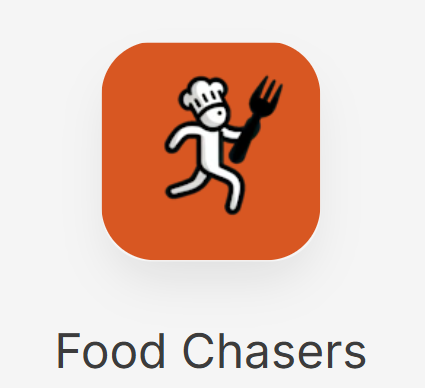

Sometimes I write about things
Demasiadas Apps
[03/01/2025] Pues eso, que el otro día me cambie el movil por el del trabajo porque el mio personal ya pasó a mejor vida. Al reestablecer la copia de seguridad me dí cuenta que tenía demasiadas (más de 150), y en una oda al minimalismo, únicamente me quede con una única pantalla en donde tengo las 15 elegidas, contando la de agenda, calendario, reloj…
A todo esto, a la semana de mi catarsis, veo un artículo que viene a decir “Your App Should Have Been A Website (And Probably Your Game Too)” Link . Y justo en este momento fue cuando dije, the best moment is now y me puse manos a la obra para desarrollar una app.
Y que mejor que una app en donde recoja el listado definitivo de restaurantes de Claudia que lleva cociendo a fuego lento los ultimos 7 años. Por ahora tenemos logo y nombre. Stay tuned
Too Many Apps
[03/01/2025] So, the other day I switched to my work phone because my personal one was already done for. When I restored the backup, I realized I had way too many apps (over 150), and in an ode to minimalism, I ended up keeping just a single screen with my 15 chosen ones, including the agenda, calendar, clock...
Then, a week after my catharsis, I came across an article that basically said, “Your App Should Have Been A Website (And Probably Your Game Too)” Link. And right at that moment, I said to myself, “the best moment is now” and got down to work developing an app.
And what better idea than an app that compiles Claudia’s definitive list of restaurants, something she’s been slowly brewing over the last 7 years. For now, we have a logo and a name. Stay tuned.